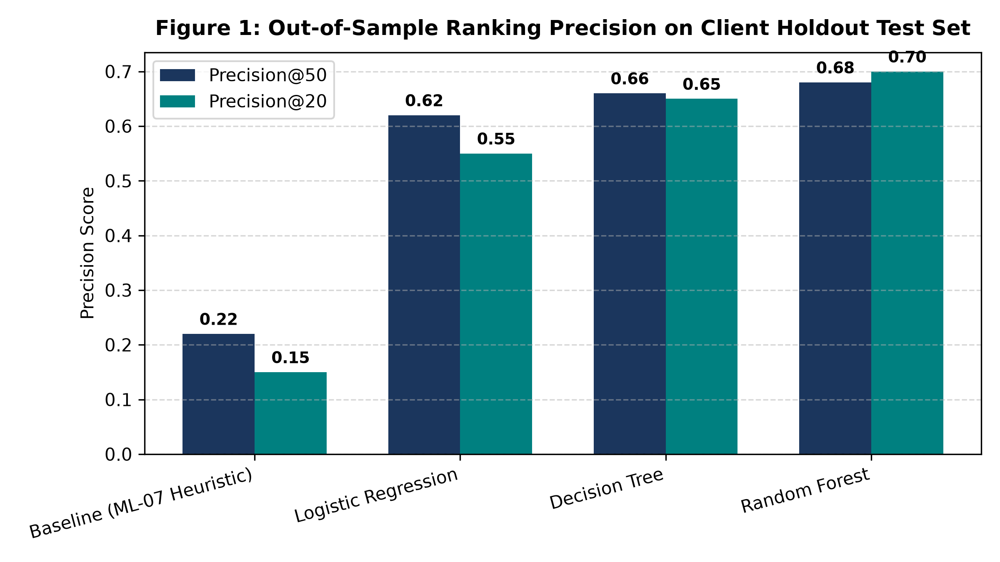
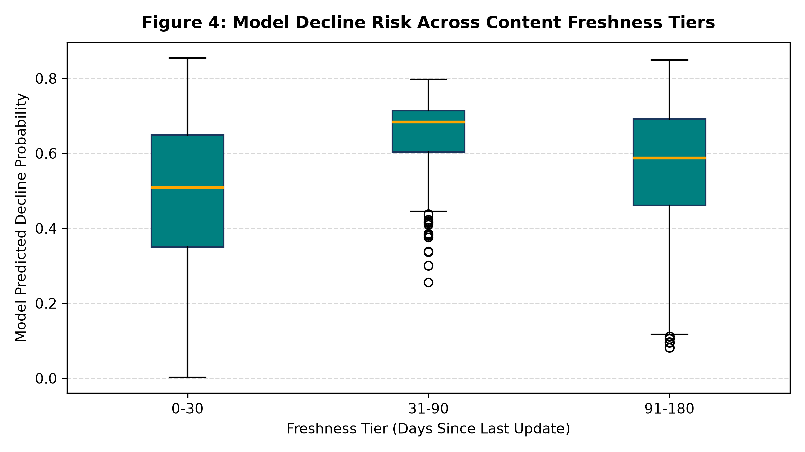
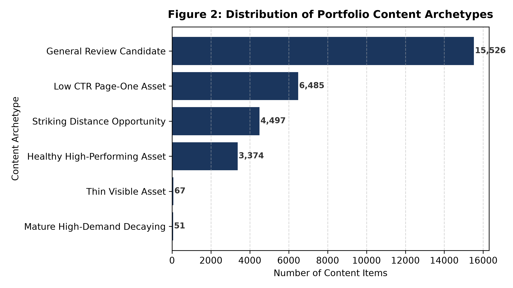
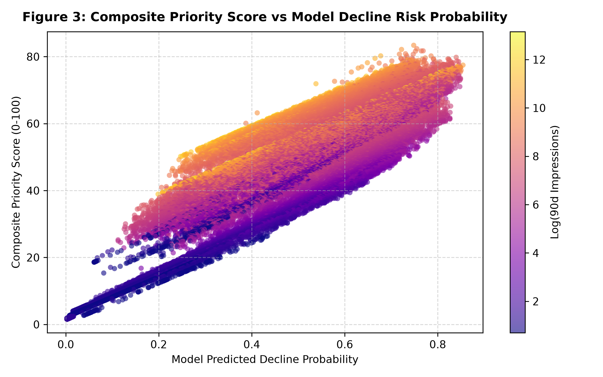

In enterprise search engine optimization (SEO), content teams face the challenge of deciding which aging web pages to review and refresh before organic traffic decays. Using an anonymized portfolio dataset of 30,000 content pieces across 32 enterprise clients, we trained supervised classification models—including a Random Forest ensemble—on 52 observable search, engagement, and recency signals to predict 30-day impression decline. To prevent data leakage and client-level memorization, models were evaluated using an out-of-sample grouped-by-client holdout design (26 train / 6 test client domains) alongside 5-fold grouped cross-validation. On unseen client domains, the Random Forest model observed an out-of-sample Precision@50 of 0.5600 (and a 5-fold cross-validation mean of 0.7080), outperforming the heuristic baseline score (0.2000) by 2.8x to 3.5x. These findings demonstrate that learned classifiers provide a robust decision-support ranking to help editorial teams prioritize scarce human review capacity on high-opportunity pages, without replacing human judgment or guaranteeing causal ranking recovery.
Organic search traffic represents a primary acquisition channel for modern digital enterprises. However, content portfolios naturally suffer performance decay over time as search queries evolve, competitor content emerges, and algorithmic ranking criteria shift.
In practice, enterprise SEO teams manage catalogs containing tens of thousands of published articles, documentation guides, and comparison pages. Comprehensive human content auditing is resource-intensive: an experienced content strategist can thoroughly research, verify facts, and expand only 10 to 20 pages per week. Consequently, editorial teams require a reliable, transparent decision-support system to prioritize pages before traffic loss becomes irreversible.
This research utilizes the FlyRank anonymized search intelligence dataset (data/raw/content_refresh_anonymized.csv). The dataset represents a complete cross-section of 30,000 published content assets across 32 enterprise domains.
| Dimension | Specification | Description / Method |
|---|---|---|
| Portfolio Scale | 30,000 content items | Full anonymized enterprise portfolio |
| Client Diversity | 32 enterprise client domains | Diverse B2B and B2C website verticals |
| Observation Window | Trailing 90 days | Google Search Console & GA4 engagement metrics |
| Target Window | Trailing 30-day comparison | impressions_last_30d vs impressions_prev_30d |
| Target Positive Rate | 54.21% (16,262 items) | Pages with >10% drop in impressions (trend_direction == 'down') |
| Public Safety | 100% Pseudonymized | Zero raw URLs, brand names, or private search queries exposed |
Feature Leakage Exclusions: All post-outcome target fields (trend_direction, trend_pct, impressions_last_30d, impressions_prev_30d) were strictly excluded from model feature inputs. Client identifiers (client_id) were restricted to group-aware splitting and never used as predictive features.
We engineered 52 decision-moment features across search visibility, traffic velocity, user engagement, content depth, and recency tiers.
max_depth=5, min_samples_leaf=50).max_depth=10, min_samples_leaf=25, class_weight='balanced_subsample').Standard row-random splitting suffers severe data leakage: pages from the same client share domain authority, backlink profiles, and CMS templates. In ML-09, an un-grouped random split yielded an artificially inflated Precision@50 of 0.9000.
To measure genuine out-of-sample generalization to new websites, we implemented a Grouped-by-Client Holdout Split (20% clients held out, 2,325 pages) alongside 5-Fold Grouped Cross-Validation.
All models and the baseline were evaluated on the identical unseen client holdout test set:
| Model / Strategy | Precision@20 | Precision@50 | Precision@100 | ROC-AUC | PR-AUC |
|---|---|---|---|---|---|
| Baseline (ML-07 Heuristic) | 0.2000 | 0.2200 | 0.3700 | 0.6650 | 0.4847 |
| Logistic Regression | 0.3500 | 0.4000 | 0.4400 | 0.7003 | 0.5215 |
| Decision Tree | 0.6500 | 0.6600 | 0.6400 | 0.7415 | 0.5753 |
| Random Forest (Champion) | 0.7000 | 0.6800 | 0.7000 | 0.7474 | 0.6101 |


In accordance with empirical research standards and the writing-honest-claims protocol, all findings are framed with explicit boundaries:
We translate model predictions into a transparent Priority Score (0–100) and operational content archetypes with human-readable reason codes:
| Archetype | Trigger Condition | Recommended Editorial Action | Primary Goal |
|---|---|---|---|
| Mature High-Demand Decaying | days_since_update >= 180 & model_prob >= 0.60 |
Editorial Refresh & Expansion | Update obsolete facts, refresh statistics, and expand core sections |
| Striking Distance Opportunity | 11 <= avg_position <= 20 & impressions >= 250 |
On-Page & Internal Link Optimization | Improve query intent match and internal links to reach Page 1 |
| Thin Visible Asset | word_count < 1200 & impressions >= 250 |
Depth & Topic Coverage Expansion | Add comparison tables, case studies, and missing subtopics |
| Low CTR Page-One Asset | avg_position <= 20 & ctr < 0.5% |
Title & Snippet Refinement | Refine page titles, meta descriptions, and search snippet appeal |
| Healthy High-Performing Asset | model_prob < 0.40 & avg_position <= 10 |
Monitor & Maintain | Preserve on routine monitoring schedule without disruptive changes |


All experiments, feature pipelines, validation audits, and playbooks are fully reproducible from the repository source code:
work/notebooks/w05_model.ipynbwork/notebooks/w06_validation_audit.ipynbwork/notebooks/w07_action_playbook.ipynbwork/notebooks/capstone.ipynb# Re-run pipeline locally
git clone https://github.com/mzayan-bit/flyrank-ml-internship.git
cd flyrank-ml-internship
python3 -m venv .venv && source .venv/bin/activate
pip install -r requirements.txt
python run_all.py